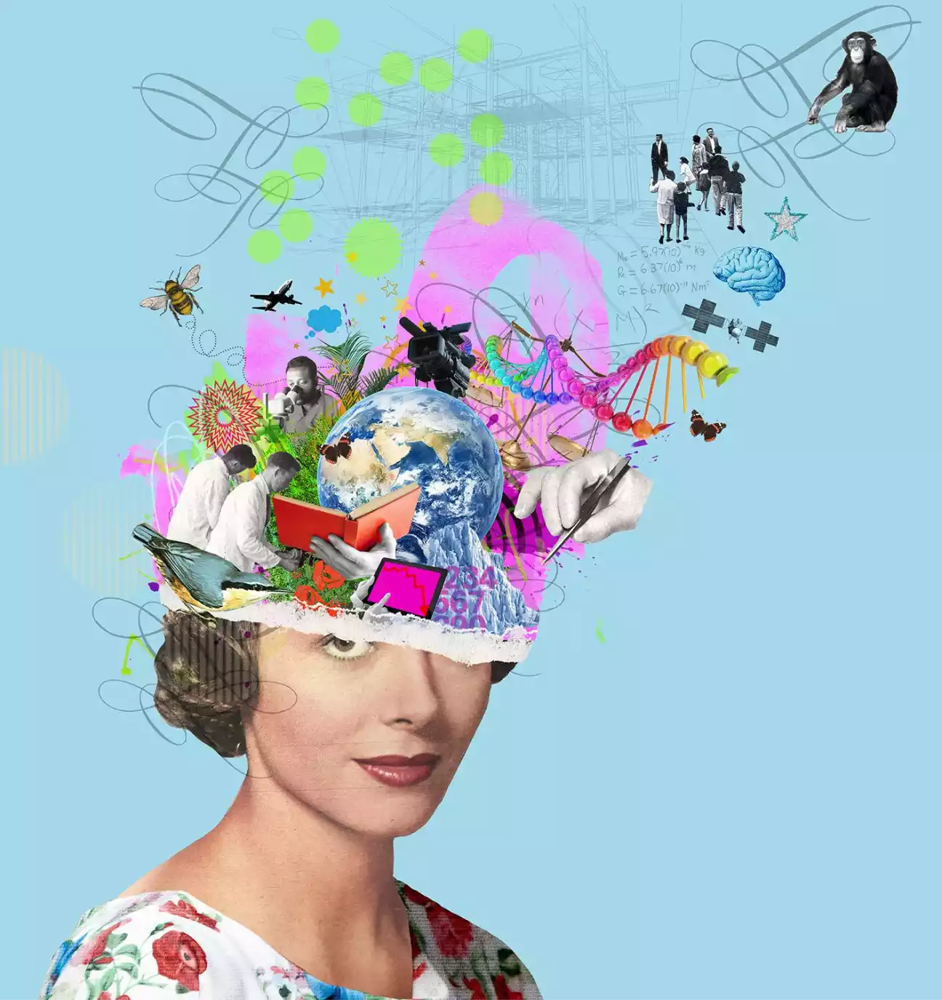
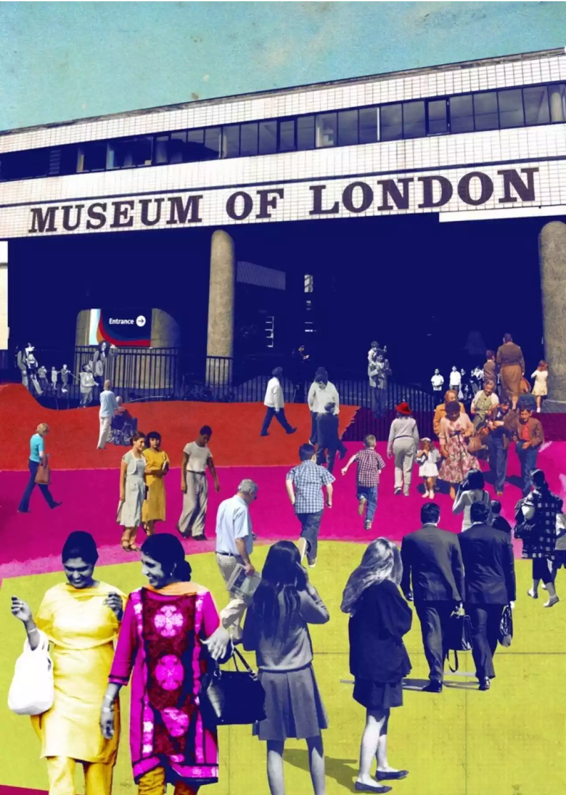
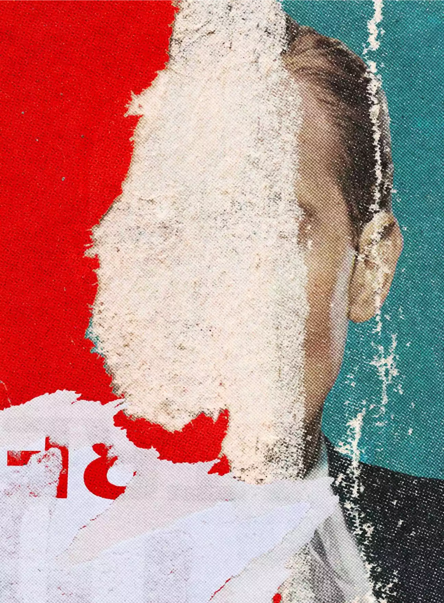
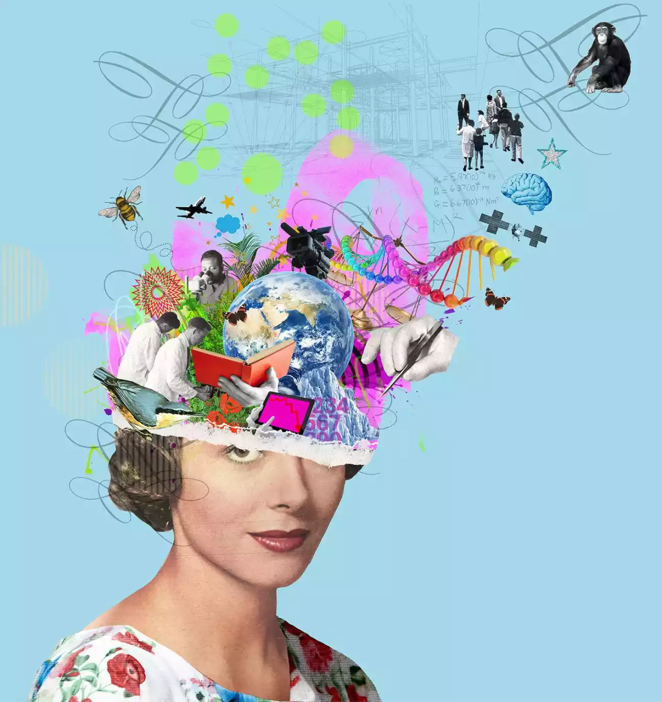
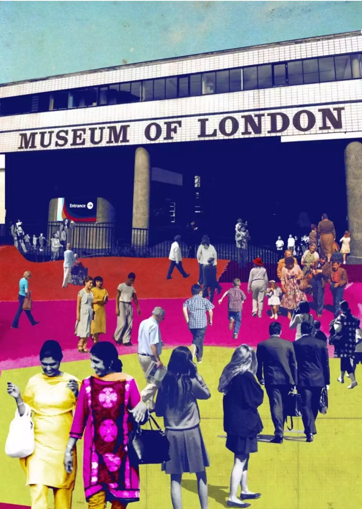
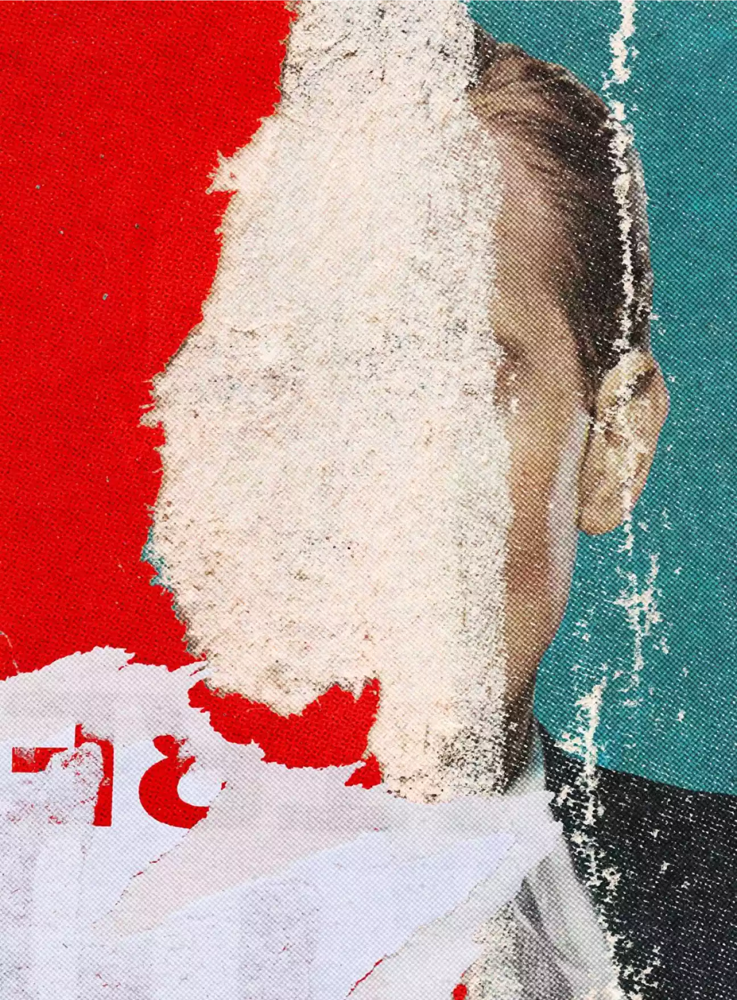
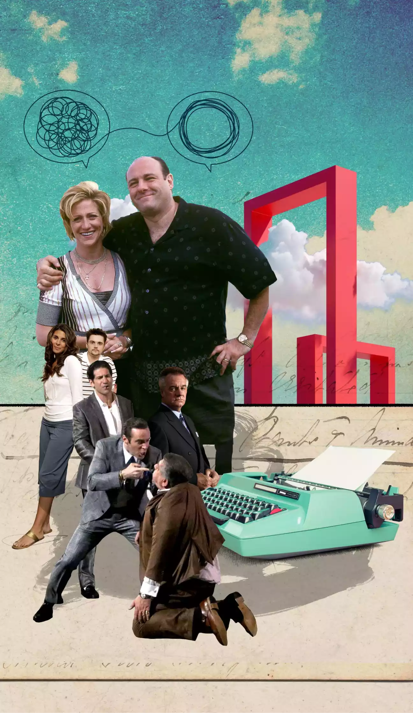
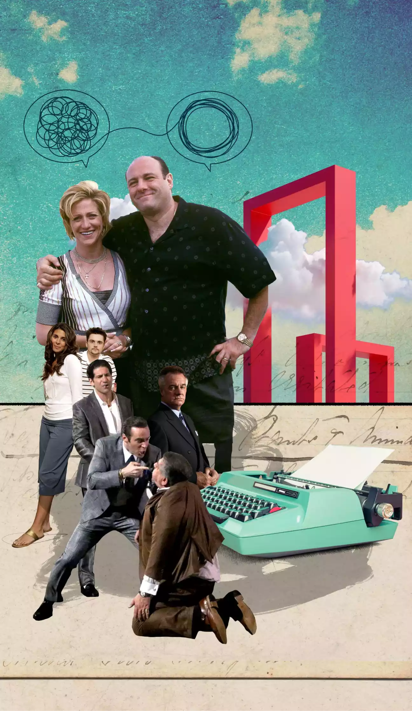

Michelle Thompson
RCA graduate Michelle Thompson is a UK-based artist who in the last twenty three years has created work for the Royal Mail, BBC, Reebok, Penguin Books, The Guardian as well as being profiled in numerous illustration books. In short, she’s built a name for herself as the go-to illustrator for editorial collage work.
Michelle creates her pieces with hand-layered papers and paints before editing them digitally.
Clients return to her time and again for her ability to convey heavy, dark subject matter with a lightness and accessibility which is rare to come by.

 







 
